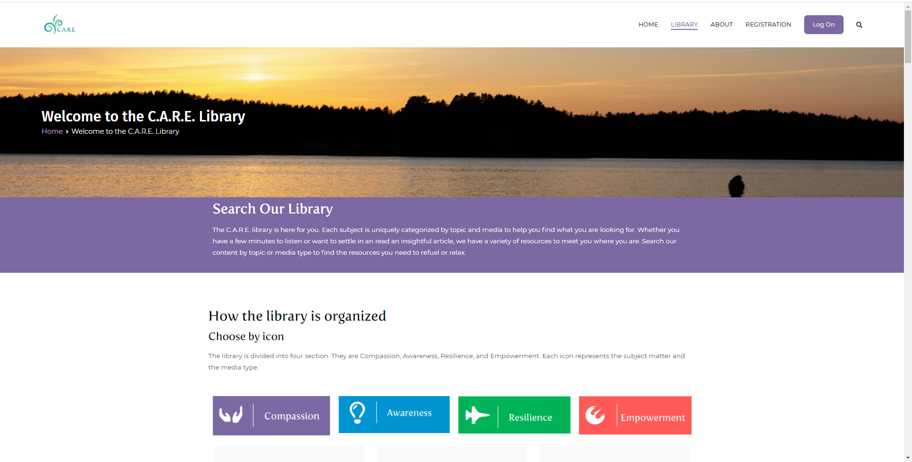

Andrew Narlock Design
This project was completed as a part of my Advanced Web Design course from the University of Washington. The goal of the project was to implement user centered design strategies in order to redesign a website for a local business. The project was completed by myself and three classmates. The final version of the design can be seen here!


My team and I had the opportunity to meet with a representative from a local organization who wanted to redesign a website for an online class that they were conducting. We decided to focus on reorganizing the content and navigation to best suit the needs of the users. The final design was built using WordPress.
The final design consists of a four part course that is available for registered users. It also provides a searchable library of every piece of content available in the course. The library is color coded and designed to be accessable for users who are not familiar with navigating through digital libraries.
Continuity across pages was also a major focus for our design. The use of color palletes and logos, provided by the business, made for a consistant design across every page and was a major improvement to the website.
Here is a shot of our first site map for the design. It was important to consider content management strategies early on in the design process in order to minimize clutter and only keep relevant content on each page.

This is a shot of one of our wireframes. Thinking about the layout of the content allowed us to create interesting and bold designs for different pages. This wireframe, of the landing page, shows one piece of the design process that allowed us to improve the users experience on the website.